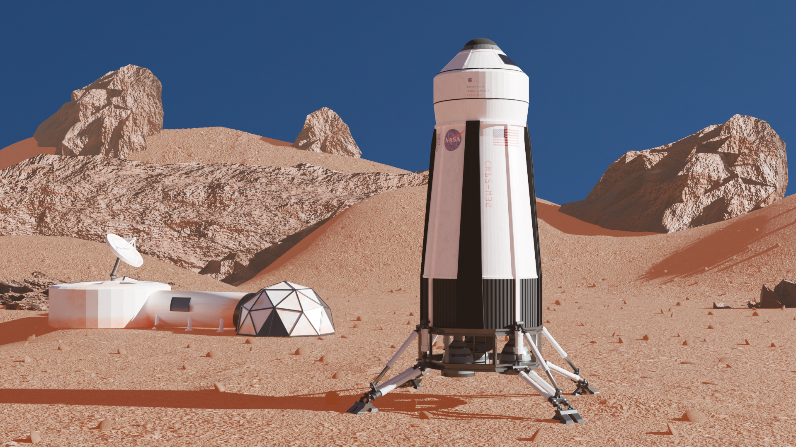
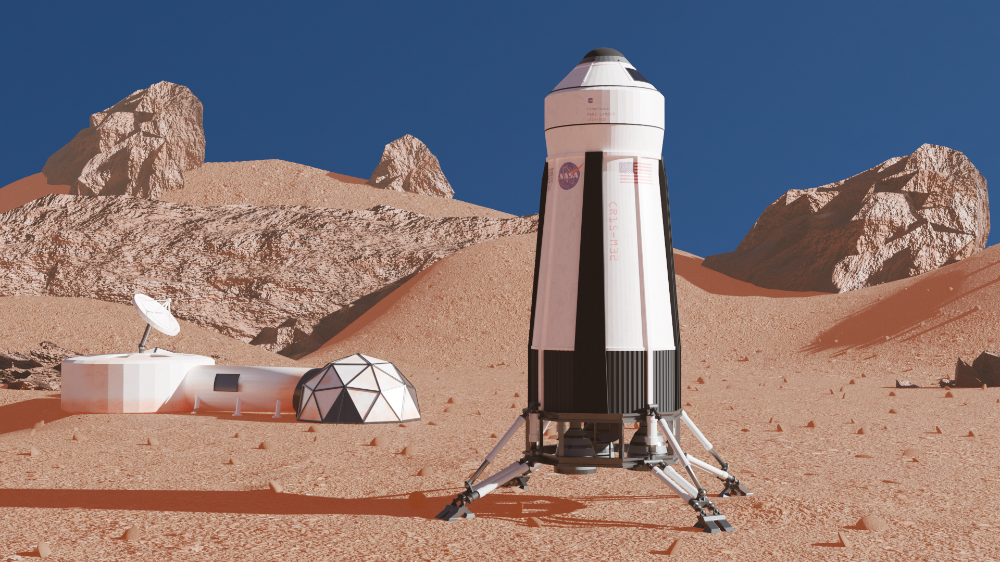

Projects
Campus Induction App
Tools: SwiftUI, ARKit, MapKit, Figma, Adobe XD, Notion
Role: UX Designer, Developer, Researcher
Overview: A gamified iOS app to help new students explore Heriot-Watt’s campus. The app uses augmented reality challenges to engage users while teaching them about key locations.
Problem: New students often find it difficult to navigate campus and access important information during induction week. My goal was to make the process more engaging and intuitive using mobile tech.
Design Process: I began with user interviews to understand student pain points, then created personas and journey maps. I wireframed key screens in Figma and built interactive prototypes to test with users. Based on feedback, I refined the onboarding flow and challenge design.
Outcome: The final app featured AR waypoints, an onboarding avatar, and interactive mini-games. I created a visual poster to present the project and included accessibility features such as high-contrast UI and clear instructions.
Chrono Crypt (Team Project)
Tools: Unity, C#, Blender
Role: UX design support, level & UI design, playtesting
Overview: A time-rewind dungeon crawler with three levels and a boss fight. Designed for speedrunning and competitive play, the game challenges users to navigate enemies, solve traversal puzzles, and use a chronos-cursed amulet to rewind time.
Gameplay Mechanics:
- Time-rewind ability to avoid hazards and retry sections
- Wall-jumping and sliding for parkour-style movement
- High-score tracking encourages iterative improvement
- Low-poly aesthetic with CRT overlay for atmosphere
UX Contributions:
- Designed HUD and menu layouts for clarity during fast-paced play
- Performed iterative playtesting with peers, improved checkpoint timing and visual cues
- Optimised difficulty progression and feedback loops to enhance pacing
Outcome: Successfully shipped a fully playable Windows build with polished UX, intuitive rewind mechanics, and trackable performance scores. Reviewed positively for responsive controls and design clarity.
Life on Mars (3D Graphics & Animation)
Tools: Blender, Unreal Engine, WebGPU
Role: 3D artist and animator
Overview: A team project visualising a fictional Mars colony. We created and textured models including a lander, drone, astronaut helmet, and habitat domes. These were rendered in Unreal and animated in a short cinematic sequence before being deployed interactively via WebGPU.
Highlights:
- Detailed modeling of NASA-inspired props and Mars terrain
- Animation and scene composition using Unreal Engine’s sequencer
- High-quality texturing and lighting for realism

 
